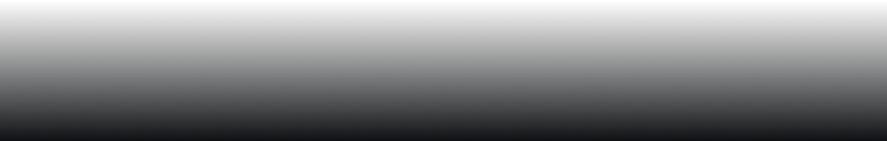
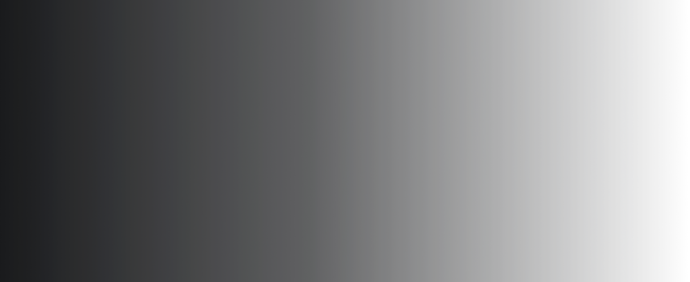

이번 주의 발견
VOL. 01
고요의 궤도
QUIET ORBIT
2026 ∙ SF ∙ 미스터리
15+
1시간 48분
모든 소리가 사라진 해안, 정체를 알 수 없는 신호가 도착한다. 마지막 관측자는 그 고요 속으로 한 걸음 다가선다.
고요가 시작되는 곳, 이야기가 깨어난다.
A CINEMO ORIGINAL CONCEPT
오늘,새로운 세계로
낯선 풍경 속에서 시작되는 네 편의 이야기
4편의 이야기

고요의 궤도
SF • 미스터리 • 15+

마지막 승강장
드라마 • 12+

파란 시간
로맨스 • 드라마 • 12+

숲에서 온 편지
판타지 • 드라마 • 전체
밤이 깊어질 때
하루의 끝에 오래 남을,조용하고 짙을 장면들
4편의 이야기

비가 그친 자리
드라마 • 전체

밤의 잠수부
스릴러 • 미스터리 • 15+
숲에서 온 편지
판타지 • 드라마 • 전체
파란 시간
로맨스 • 드라마 • 12+